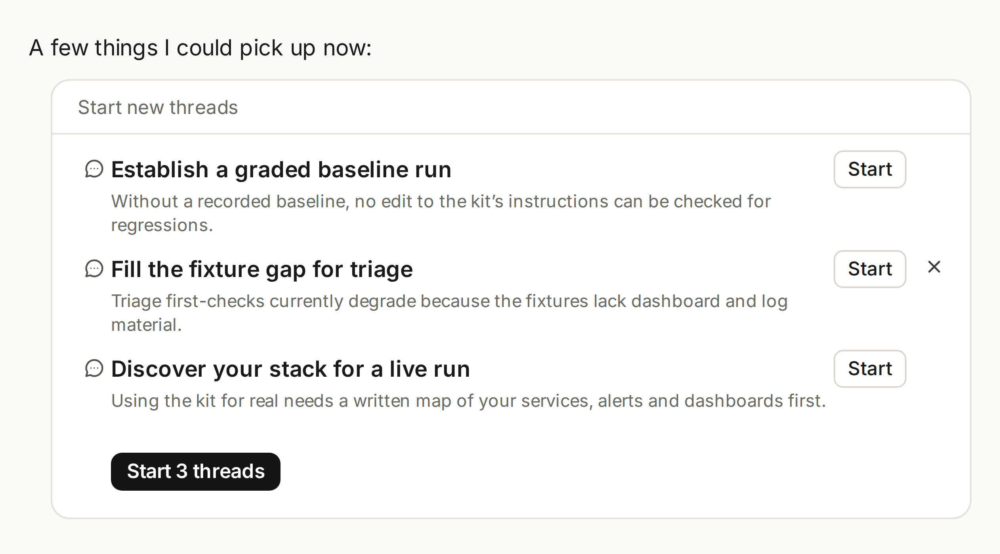

Claude 프로젝트(projects)의 새로운 경험을 Claude Code에서 베타로 만나보세요.
지금까지는 하나의 빌드 작업에서 여러 세션을 관리하려면 일을 쪼개고, 인수인계를 저글링하고, 결과를 다시 꿰매 붙여야 했습니다. 이제 Claude Code 프로젝트에서는 무엇을 끝내야 하는지 설명하기만 하면 Claude가 작업을 관리합니다.
Claude는 요청의 범위를 정하고, 작업을 위임하고, 병렬 스레드(thread)를 조율하고, 결과물을 검토하고, 완성된 결과를 조립합니다. 여러분은 그 과정 내내, 심지어 휴대폰에서도 진행 방향을 조정할 수 있으며, 컴퓨터 앞을 떠난 뒤에도 Claude는 계속 일합니다.
예를 들어 프로젝트를 구성하고 앱 결제 과정의 p75 지연 시간을 줄이는 것을 목표로 잡아 보세요. 그런 다음 Claude에게 각 엔드포인트를 프로파일링하고, 최적화를 테스트하고, 병렬 스레드에서 PR을 열라고 요청합니다. 또는 API, 웹, 모바일 리포지토리를 연결하고 폐기 예정인 v1 엔드포인트를 퇴역시키는 것을 목표로 잡을 수도 있습니다. Claude는 리포지토리마다 스레드를 하나씩 만들어 호출부를 마이그레이션하고, 테스트를 실행하고, PR을 연 뒤, 어떤 것을 먼저 머지해야 하는지 알려줍니다.
오늘부터 새 프로젝트는 Claude Code에서 클라우드 세션을 사용하고 웹이나 데스크톱에 기존 프로젝트가 없는 일부 Claude Pro 및 Max 구독자에게 베타로 제공됩니다.
앞으로 한 주에 걸쳐 해당 플랜의 더 많은 Claude Code 사용자로 접근 범위를 넓힐 예정입니다. Claude 전체와 Team 및 Enterprise 플랜에서의 새 프로젝트는 그 이후에 제공됩니다. Pro 또는 Max 플랜인데 아직 접근 권한이 없다면 대기자 명단에 등록할 수 있습니다.
Pro와 Max 플랜의 기존 프로젝트는 지금과 똑같이 계속 동작합니다. 채팅과 Cowork로 롤아웃이 확대되면서 기존 프로젝트도 업그레이드할 예정입니다.
프로젝트에는 일을 수행하는 스레드와 이를 지휘하는 코디네이터(coordinator)가 있습니다.
프로젝트를 시작할 때 목표와 함께 리포지토리 또는 컨텍스트를 선택합니다. Claude는 먼저 바로 착수할 수 있는 작업을 제안합니다. 프로젝트의 클라우드 환경, 커넥터, 플러그인, 지침, 모델을 구성할 수 있습니다.

메인 프로젝트 채팅에서 진행 상황을 모니터링하고 안내할 수도 있고, 개별 스레드로 들어가 세부 사항을 살펴보고 조정할 수도 있습니다. 비서실장에게 브리핑하듯 프로젝트 안에서 Claude에게 브리핑하면, Claude가 새 스레드나 기존 스레드로 작업을 배분합니다.
Claude는 중간 점검도 하고 작업을 끝까지 마무리합니다. 리포지토리가 연결되어 있으면 스레드가 풀 리퀘스트를 열고 테스트를 실행하며, 문서가 연결되어 있으면 문서를 읽고 초안을 작성합니다.
내부적으로 각 스레드는 자기만의 브랜치와 리포지토리 사본에서 작업하는 Claude Code 클라우드 세션입니다. 코디네이터가 작업을 정리해 주지만, 여러 스레드가 같은 코드를 손대면 그 겹침은 다른 PR과 마찬가지로 머지 충돌로 해결됩니다.
각 스레드는 필요할 때 서브에이전트, 루프, 워크플로를 활용해 위임받은 작업을 더 작은 조각으로 나눌 수 있어, 큰 과제도 더 빨리 끝납니다.
프로젝트는 오래 실행되거나 에이전트 방식으로 진행되는 워크플로, 즉 답변 한 번으로 끝나지 않고 여러 부분으로 이루어진 작업을 위해 설계되었습니다.
시간이 지나면서 Claude는 프로젝트의 세부 사항을 더 많이 익히고 이를 작업에 적용합니다. 이제 모든 스레드가 공유 메모리에 기여하고 또 그 메모리를 끌어다 쓰므로, 복잡한 프롬프트 엔지니어링의 필요성이 줄어듭니다.
예를 들어 Claude는 릴리스가 금요일로 옮겨졌다는 것, 내보내기 기능을 뺀 이유, 결제 서비스를 건드리기 전에 누구에게 확인해야 하는지를 기억할 수 있습니다.
Claude는 여러분의 업무 방식과 소통 스타일도 기억합니다. 얼마나 자주 중간 점검을 할지, 새 스레드를 얼마나 자주 시작할지, 각 업데이트를 얼마나 상세하게 쓸지 조정해 달라고 요청할 수 있습니다.
메모리와 함께, 이제 프로젝트에는 여러분이 추가한 파일과 Claude가 만든 아티팩트를 모아 두는 라이브러리가 포함됩니다. 관련 자료를 찾기 쉬워지고, 새 작업이 이전 성과 위에 쌓아 올리기도 쉬워집니다.
프로젝트는 여러 스레드를 동시에 실행할 수 있고, 각 스레드는 온전한 Claude Code 세션입니다. 그래서 프로젝트는 사용량 한도에 더 빨리 도달할 수 있습니다. 프로젝트별 사용량을 확인할 수 있고, 코디네이터 채팅과 워커 스레드가 각각 사용할 모델과 노력(effort) 수준을 선택할 수 있습니다.
현재 스레드는 클라우드에서 실행됩니다. 여러분의 로컬 도구 및 코드와 함께, 여러분의 네트워크 안에서 여러분의 머신 위에서 실행하는 기능도 곧 제공됩니다.
프로젝트를 지금 시작해 보세요.